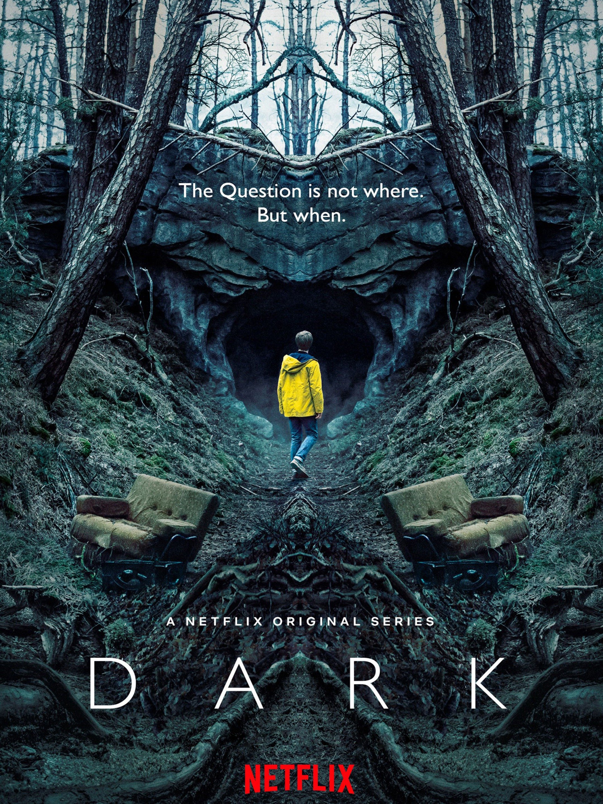

There are many things that I enjoy doing, especially during summertime, and here are some of them:
Listening to music
Who doesn't love to just sit down and listen to some good music? There are many amazing artists out there, but I got to
admit that my absolute favourite is the one and only Taylor Swift. I just adore her songs and I think that she is one
brilliant songwriter. In the table below I gave a list of my top 5 songs that I will never stop listening to.
| Name of the song | Reason why it is one of my favourite songs |
|---|---|
| All Too Well (10 Minute Version) | This ten minute masterpiece changed my whole perspective of how I view the music industry. Every second is a new breathtaking experience. |
| The Archer | This song is a perfect representation of the deep emotions that one person can feel. |
| This is me trying | Just like the previous one, this song shows true feelings of trying to be your best self. |
| Marjorie | With exquisite lyrics, this song really shows how it is to lose a loved one. |
| Fifteen | A simple, yet amazing song which represents a new, thrilling start. |
Watching TV shows and movies
I chose this particular interest because I like to just relax and watch a nice movie or a series. My favourite
genres are science-fiction and fantasy. I love many series, but Dark is my number one. Also, Harry Potter is a
franchise that brings out the inner-child in me.

Reading books
Reading books is a great hobby that I picked up during the pandemic in 2020. There are many excellent authors
who have skills to paint the clearest picture with few simple words. I love reading different genres from classics
like Les Misérables by Victor Hugo to modern fascinating thrillers like Carrie by Stephen King.
Travelling


Last, but not least, we have travelling. I have a list of places I would love to visit some day
that I'm going to share with you:
- Disneyland, Paris
- Maldives
- Great Barrier Reef
- Rome, Italy